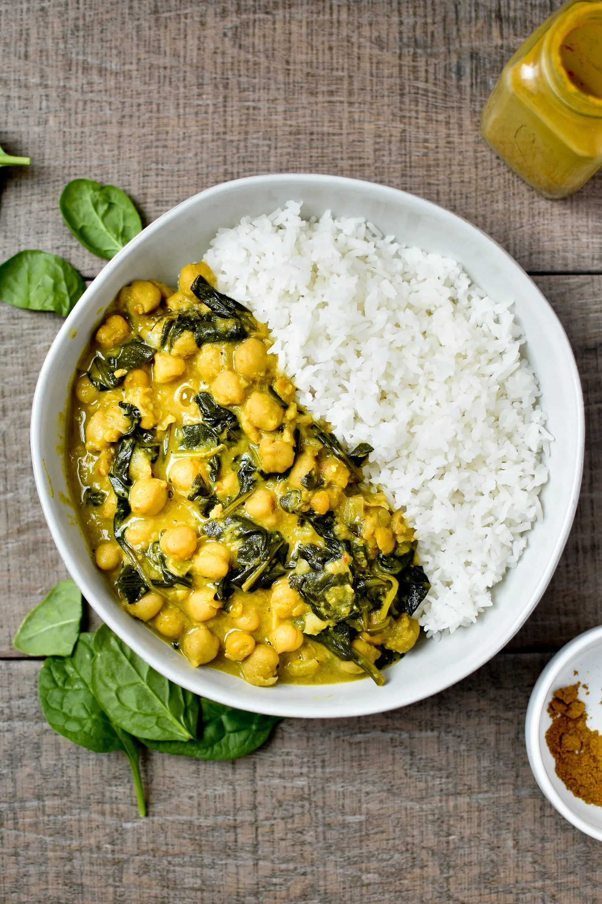

Home
Chickpea Coconut Curry

Description
A five ingredient chickpea and coconut curry, delicious and so easy to make!
Ingredients
- 2 tbsp medium Indian curry paste, such as tikka masala
- 400g can chickpeas, drained and rinsed
- 227g can chopped tomatoes
- 25g/1oz creamed coconut, from a block, roughly chopped
- 250g sachet basmati rice or 125g uncooked basmati rice
Steps
- Put the curry paste and chickpeas in a frying pan and cook over a low heat for 1–2 minutes, stirring constantly.
- Add the tomatoes and coconut and bring to a gentle simmer. Cook for 6–8 minutes, stirring regularly, until the curry looks thick and glossy. Stir in a little water if you need it.
- Serve with basmati rice, cooked according to the packet instructions.